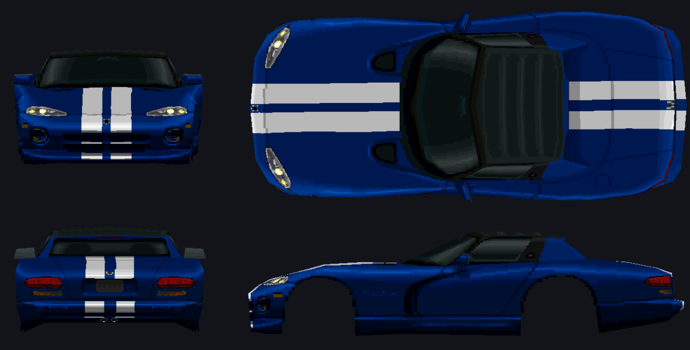
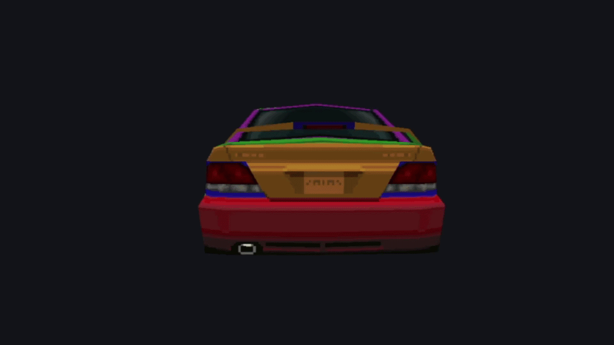
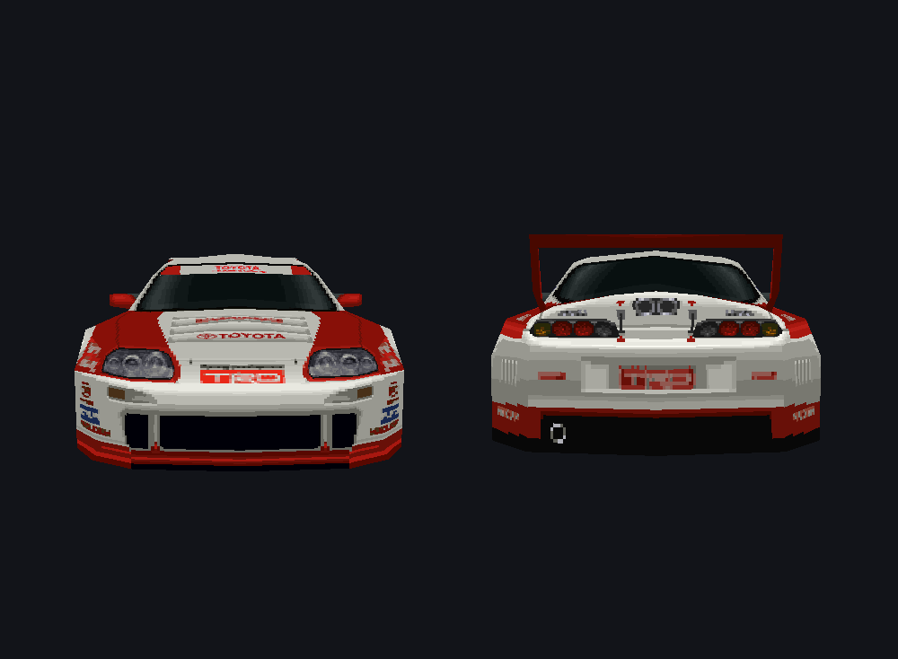
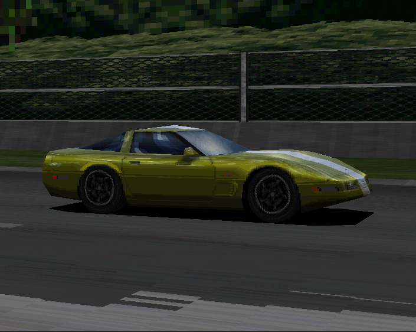

GTExplorer
An all-in-one extractor, viewer, editor, and repacker for Gran Turismo 1 (PS1) archive files.






3D Mesh Preview
Features
- Archive Management — Extract and repack GT-ARC / GT-ZIP archives (
.DAT/.ARC). Usesmanifest.txtwhen present. - Asset Viewer — View TIM, TIM packs (
.tpk), CTEX, GT-PS, and other GT assets. - 3D Model Viewer — Preview 3D car and track models (TBD).
- Built-in Editors — Edit save data, view car databases, adjust color palettes, and more.
- Preview Options — Inspect text files, GTHTML, SPEC / COLOR tables, and sound sequences.
- TIM Tools — Convert, re-encode, replace, swap palettes, and batch-process TIM textures (requires Pillow).
- Region Support — Built-in regional file lists for accurate asset identification.
- TIM & Expansion Tools — Optional TIM packing and INST/ENGN sample expansion.
- Disc Rebuilding Pipeline — Integrated wrapper for mkpsxiso (
dumpsxiso/mkpsxiso) directly within the GUI. - In-App Help — Built-in user guide (Help button or Help → User Guide).
💡 Tip: Always perform a clean Extract All (with
manifest.txt) prior to modifying assets for seamless repacking.
Work in Progress
Palette Editor
In latest build
Database Editor
Known Limitations
- TIM Pack Repacking: Repacking
.tpkfiles is not yet implemented. Loose.TIMfiles can be edited normally. - Model Renderer: Model viewing is experimental. Models currently lack wheels (using placeholders for now) and may cause performance slowdowns or crashes.
- Repack Workflow: You must open the folder you wish to repack via File → Open Folder before running a repack operation (Extract/Repack).
- Disc Rebuilding: Automatic disc rebuilding with
mkpsxisocan occasionally fail after repacking. Moving modified files into the disc folder manually is recommended.
Typical Modding Workflow
[Dump ISO] ──► [Extract DAT/ARC] ──► [Edit Assets/TIMs] ──► [Repack Archive] ──► [Rebuild ISO]
- Dump Game Disc (Optional, once) — Run Tools → Dump disc (dumpsxiso)… or set up via Setup.
- Extract Archives — Open a target
.DATfile and click Extract → Extract All. - Modify Assets — Edit texture files (
.TIM), text, or other assets in your output directory. - Repack — Run Extract → Repack to generate an updated archive file.
- Rebuild Disc — Copy the modded
.DATinto the disc file tree (matching the original path), then run Tools → Build disc (mkpsxiso)… and boot the new.cuein an emulator.
Setup / Workspace
Open File → Setup / Workspace… to configure paths:
| Section | Purpose |
|---|---|
| 1. Working folders | Input = original .DAT / .ARC files (read-only). Output = extracts and repacked output. |
| 2. Disc dump & rebuild | (Optional) Paths for disc image, dumpsxiso XML, disc file tree, and built .bin/.cue. |
Suggested Layout
C:\GT1_Modding\
├── GAMEFILES\ ← Original game archives (.DAT / .ARC)
├── _mods\ ← Extracted assets & repacked edits
├── disc_files\ ← ISO files dumped via dumpsxiso
├── gt1.xml ← Project configuration XML
└── _built\ ← Output directory for rebuilt .bin / .cueFor a simple single-root setup, point the default project paths at something like C:/GT1/.
Supported File Formats
Archive Kinds
| Kind | Detection | Examples |
|---|---|---|
| Standard GT-ARC | @(#)GT-ARC |
COURSE.DAT, CAR.DAT, SOUND.DAT, MENU_RAW.ARC |
| Compressed GT-ARC | Mangled @(#)GT-A / RC |
CARINF.DAT |
| Raw GT-ZIP | No ARC wrapper | GAMEFONT.DAT |
Detected File Types
| Content | Extension | Notes |
|---|---|---|
| TIM texture | .tim |
Preview, replace, re-encode |
| TIM pack | .tpk |
Expand / rebuild with Extract TIMs |
| GT-PS / GT-CAR / GT-CTEX / GT-SKY | .ps / .car / .tex / .sky |
Models & textures |
| Nested GT-ARC | .arc |
Open Nested ARC |
| GTHTML | .gthtml |
Menu / script data |
| INST / ENGN / SEQG | .ins / .es / .seq |
Sound & sequences |
| SPEC, COLOR, TIRE, … | matching | Car part tables |
| Filename lists / text | .idx / .txt |
Name tables & messages |
Requirements & Quick Start
Prerequisites
- Python 3.8+
- PyQt6 ≥ 6.4
- Pillow & NumPy
Installation
git clone https://github.com/JeevesGB/GTExplorer.git
cd GTExplorer
pip install -r requirements.txtRunning GTExplorer
Windows: run.bat
From terminal: python src/main.py
- On first launch, complete Setup (input / output folders).
- File → Open .DAT — or click an archive in the Input list.
- (Optional) Pick a region Names list in the toolbar.
- Extract → Extract All into your output folder.
- Edit files on disk, then Extract → Repack.
Press F1 or click Help in the toolbar for the full User Guide.
Tools Folder
GTExplorer does not ship mkpsxiso. To dump or rebuild full disc images:
- Download the official release: Lameguy64/mkpsxiso
- Place
mkpsxiso.exeanddumpsxiso.exein the project'stools/directory.
tools/
├── README.txt ← Ships with the project
├── mkpsxiso.exe ← You add (official release)
└── dumpsxiso.exe ← You addKeyboard Shortcuts
| Shortcut | Action |
|---|---|
| Ctrl + O | Open archive |
| Ctrl + Shift + O | Open extract folder |
| Ctrl + E | Extract selected |
| Ctrl + F | Focus filter |
| F1 | Open User Guide |
Credits
- pez2k / gt2tools — foundational prior research into GT1's archive and asset formats, without which much of GTExplorer's format support would not have been possible.
- Lameguy64 / mkpsxiso — provides the
dumpsxiso/mkpsxisotools GTExplorer wraps for optional disc dumping and rebuilding. - The Gran Turismo modding and PS1 reverse-engineering community — for ongoing research, testing, and format documentation that continues to inform this project. Many of GT1's file formats are still being actively researched; see Contributing if you'd like to help.
Contributing
Contributions are welcome! Please see CONTRIBUTING.md for setup instructions, coding guidelines, and a list of areas that need help (see Known Limitations above for good starting points).
License
Distributed under the MIT License.